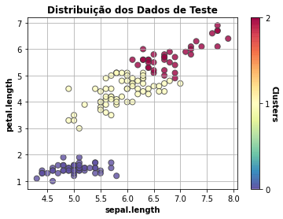

Função do componente
Este é um componente que treina um modelo K-Means usando Scikit-learn.
Scikit-learn é uma biblioteca open source de machine learning que suporta apredizado supervisionado e não supervisionado.Também provê várias ferramentas para ajustes de modelos, pré-processamento de dados, seleção e avaliação de modelos, além de outras funcionalidades.
Entrada esperada
Espera-se como entrada para o componente uma tabela com colunas que representam valores numéricos ou categóricos.
Parâmetros
Na tabela abaixo, observamos os parâmetros necessários para que o componente funcione da maneira correta:
Quantidade de clusters |
| - | O KMeans utiliza uma quantidade K de clusters para separar os dados. |
Quantidade de sementes |
| - | Número de vezes que o algoritmo será executado com diferentes sementes de centróide. |
Número de iterações |
| - | Número máximo de iterações do algoritmo em uma única execução. |
Métricas de performance
- Escore de Silhouette: Avalia a qualidade dos clusters criados usando algoritmos de clustering em termos de quão bem as amostras são agrupadas com outras amostras semelhantes entre si.
Retorno esperado no experimento
- Dados de teste:

- Tabela dos dados:

Retorno esperado na implantação
Tabela com os valores preditos para o atributo alvo.